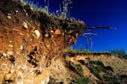

|
|
|
|
|
|
Agriculture History |

|
|
|
Soil and Environment Activities The following activities are designed for you to take a look at how the environment affects agriculture. Try some or try all of the tasks. These are ideas that are taken from the Agriculture Saskatchewan series by Saskatchewan Education. |
Activity 1: Soil Texture
Recognizing soil texture and its related characteristics is
very important in production decisions made by producers every
year. Obtain dry samples of sand, silt and clay. Record your
findings in a journal writing format.
Using the samples of sand, silt and clay, rub a pinch of each
between the thumb and forefinger? Which is the smoothest? the
coarsest?
Place a pinch of one of the samples in the palm of one hand and
add two drops of water from an eyedropper. Use the forefinger
of the other hand to mix the water with the soil. Describe how
the sample feels when wet. Repeat with the other two samples.
Place no more than three to five grains of salt in the palm of
one hand. Using an eyedropper, add five drops of liquid laundry
starch. Use the forefinger of the other hand to mix the salt and
liquid starch. Add three drops of white glue and mix. Compare
this mixture to the mixtures produced in part B. Add two more
grains of salt and mix. Describe the effect of adding more salt.
The last part of this experiment illustrates interesting changes in texture.
Conduct a sedimentation test on a soil sample to determine the percentage of sand, silt and clay in the sample. Calgon laundry powder is used to keep the individual soil particles separate. Use the following activity sheet for this part.
Activity Sheet - Sedimentation Test
You will need the following items.
- soil sample
- one litre fruit jar with lid
- Calgon (about 6 tablespoons) mixed in a litre of water
- ruler
- measuring cup
- tablespoon
You want to determine:
You do the following.
- Put 250 millilitres of soil in the jar and add 750 millilitres of water mixed with 5 tablespoons of the Calgon solution.
- Cover the jar and shake it for 5 minutes. Allow the material to settle for 24 hours.
- After 24 hours measure and record the depth of the settled soil.
- Shake the jar for 5 minutes again. Let stand for 40 seconds to allow the sand to settle. Measure the depth of the settled soil and record it as sand depth.
- Let the soil settle for 30 more minutes. Measure the depth of settled soil. Subtract the sand depth and you have measured the depth of silt.
- The remaining particles are clay. What is the depth of the clay?
- Calculate the percentage of each soil separate. % separate = depth of separate x 100 total soil depth
- Express your findings in chart or graph form.
Activity 2: Soil Observation
Collect soil from different areas.
- the playground
- a flowerbed at home
- potting soil bought at a greenhouse or supermarket
- a forested area
Examine the samples using microscopes and/or
magnifying glasses and record your observations about the following.
- living organisms in the soil
- soil colour
- soil texture
- soil odour
- acidic, alkaline and neutral properties of soil
- other observations such as assumptions of soil fertility according to texture and colour
If possible, arrange to exchange soil samples with a school in
another area of the province. See the following Activity Sheet.
Activity Sheet - Soil Observation
Working in your group, obtain soil samples from various places.
Place these samples in jars and carefully label them.
Place the same number of paper towels on your work space as you
have samples. Label the towels to correspond with your samples.
Examine each sample for the following.
- living organisms
- soil colour
- soil texture
- assumptions of soil fertility according to colour and texture
- soil odour
- acidic, alkaline or neutral characteristics (pH level)
- other items
Devise charts to record your observations.
Using a magnifying glass, or a microscope, examine each soil sample.
Can you see any living organisms in your sample? If so, describe
them.
Describe the colour of each soil sample. Dark brown, dark grey
and black soils are generally more fertile than lighter coloured
soils. Rate the fertility of the samples in order (1 being highest
in fertility).
Place about a tablespoon of soil from one sample in your hand.
Add enough water to make the soil into a ball with the consistency
of putty. Note the texture of the soil.
- coarse, gritty: sandy soil
- sticky, slippery: clayey soil
- smooth: silty soil
Try to break the ball of soil by squeezing it. If it breaks apart
easily, the soil is probably sandy. If it changes shape but basically
remains a ball, it is probably loam, sandy loam or silty loam.
Try to make a snake or ribbon from the ball. If you cannot do
it, the soil is probably very sandy. If a short snake or ribbon
can be made before it breaks, the soil is a mixture of sand, clay
and silt. If a longer snake or ribbon can be made, the soil is
probably clayey.
Evaluate each sample, determine the texture and record your findings.
Does the sample have an odour? Describe it.
Use pH paper to determine the acidity of each soil sample by placing
a tiny sample of moist soil on the pH paper. Use distilled water
to moisten the soil, if necessary. A pH of 7.0 is considered neutral.
More than 7.0 indicates alkaline soil. Less than 7.0 indicates
acidic soil. Most productive soil ranges from a pH of 6.0 to a
pH of 7.5.
Other observations:
e.g. To determine if there is organic material in the soil, place
a few spoonfuls of each sample in a jar half full of distilled
water. Place the lid on the jar and shake it well. Let it sit
for about 15 minutes. Examine the sample for floating organic
material.
Activity 3: Soil Zones
Why does soil
differ from region to region in Saskatchewan? For example, why
are there clay soils in the Regina-Moose Jaw-Weyburn area and from
Kindersley southeast through Eston to the South Saskatchewan River
and sandy soils around Good Spirit Lake and north of Maple Creek?
Individually research this question using
the sources available to you (e.g. magazine articles, encyclopedias,
people, pamphlets). Share your ideas with others.
Activity 4: Organic Matter
Q: How can
people increase the organic material and nutrients in soils?
A: Add fertilizers;
make a compost pile.
Try it! Build a compost pile, or at least research
how a compost pile may be constructed. Create a step by step description
and include it in a newsletter to parents.Include information about
possible questions like....
Why compost? (In order to add humus to the soil to replace organic matter lost during harvest.)
How does composting work? (Organic matter is decomposed by microorganisms.)
What is used? (Use kitchen leftovers such as egg shells and vegetable matter, grass clippings or dead plant matter.)
What is needed? (A special bin or pit and organic material is needed.)
How is a compost pile constructed? (Add a 20 cm layer of organic waste; add a soil layer 5 cm thick; another layer of organic waste; soil; and so on. Keep the pile moist and turn it occasionally.)
What is happening? (Microorganisms such as bacteria and fungi
digest the wastes and heat the compost to about 65°C. Heat
kills weed seeds and harmful organisms and speeds up the creation
of humus. This process produces fertilizer rich in nutrients.
So...what is happening out there now???
Some industries and sewage treatment plants now return sludge
(organic waste produced by the industry or treatment plant) to
the soil by using trucks to spread or spray the sludge on fields
before planting or on pastures. Some agricultural producers are
recycling animal wastes in a similar manner. Find out more....
Set up an ant farm to see how living organisms
change soil structure and redistribute organic matter. How else
do animals do this?-tracks, holes, digging.
Earthworms are another example of how living organisms change
the soil structure. Although earthworms are not common in many
farming situations, their activity in the soil is fascinating.
Try constructing
a worm ranch. See the following Activity Sheet.
Activity Sheet - Worm Ranch
A worm ranch vivarium can serve several purposes in the classroom.
- To show the interaction of living things and their environment
- To study food chains and food webs
- To show the importance of soil, light and water
- To study the effects of soil organisms on soil
- Enjoyment
You will need the following items.
- 2 worm ranch vivariums (or ant farms)
- topsoil mix, organic litter, sand, clay, aquarium gravel
- wilted grass clippings
- 20 to 40 live earthworms
To build an earthworm vivarium:
- Use 2 pieces of glass held 3 to 4 centimetres apart by a frame. Each side must have opaque covers in place when observation is not occurring because light-sensitive earthworms will not tunnel near uncovered glass.
- Fill the space between the pieces of glass with layers of 'soil'. The depth of the layers is not critical, but should be similar.
- Put each vivarium over an empty pan.
- Add measured amounts of water to the top of each vivarium until it begins to drain from the bottom of the frame. Record the amounts of water added.
- Measure the amount of water that drains into the pan. What does the difference in amount indicate about moisture-holding capacity of soil?
- Stock the ranches and observe the activity of the earthworms.
- Cover the glass sides.
Observations can be made over the next week at a set time. If the opaque covers are constantly being removed from the glass, the earthworms will not move around very much.
You could record your observations in a journal format.
You could also diagram what the
vivariums look like when viewed at the beginning, half
way through and at the end of
the experiment (e.g. layers of soil, tunnels).
Consider:
- Why was there a difference in how much water was added to each vivarium before it began to drain out the bottom? a difference in how much drained through?
- Are there differences in the activity of the earthworms in the two ranches?
- What could have caused these differences?
- What happens when the opaque cover is removed and why?
- How do earthworms affect their environment?
|
|
|